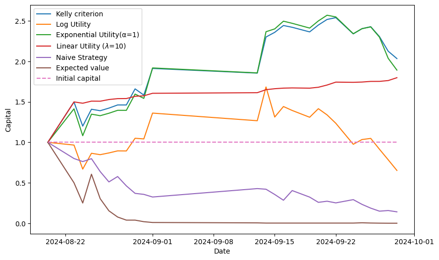

Unlocking the secrets of football betting with data science and utility optimization
Introduction
Imagine standing in a bustling stadium, the roar of the crowd echoing around you. The excitement is palpable as your favorite team steps onto the pitch. Now, imagine if you could predict the outcome of the match with a high degree of accuracy. What if you could not only enjoy the thrill of the game but also profit from it?
This is the world where data science meets sports betting. Over the past few months, I've embarked on an ambitious project: to build a predictive model for football matches that could optimize betting strategies and maximize gains. This journey took us deep into the realms of machine learning, probability, and optimization algorithms. And today, I're excited to share our story with you.
Whether you're a football enthusiast curious about how data can predict match outcomes, a budding data scientist eager to see real-world applications of machine learning, or an experienced professional interested in utility optimization, there's something here for you.
The Allure of Predicting Football Matches
Football isn't just a game; it's a global phenomenon. Every week, millions of fans watch matches, analyze team performances, and discuss strategies. And with the rise of sports betting, predicting match outcomes has become both an art and a science.
But why is predicting football matches so challenging?
- Complex Dynamics: Football is influenced by countless factors—player form, injuries, weather conditions, team morale, and even referee decisions.
- Uncertainty and Variability: Upsets happen. Underdogs win. A red card can change everything.
- Data Overload: There's an abundance of data available, but making sense of it requires sophisticated tools.
I set out to tackle these challenges head-on, leveraging data science to bring clarity to the chaos.
Our Approach: Combining Data Science with Betting Strategies
At the core of our project were two main objectives:
- Build an Accurate Predictive Model: Use historical data to predict the probabilities of match outcomes—home win, draw, or away win.
- Optimize Betting Strategies: Determine the optimal amount to wager on each bet to maximize growth while minimizing risk.
Let's dive into how I approached each of these.
Building the Predictive Model
Data Collection: The Foundation
I started by gathering a rich dataset:
- Historical Match Data: Over 28,000 matches from 2006 onwards, covering top European leagues and international competitions.
- Team Statistics: Detailed metrics from SoFIFA, including player ratings, team strengths, and tactical preferences.
- Betting Odds: Real-time and historical odds from various bookmakers via APIs and web scraping.
These data sources provided a solid foundation for our predictive model, allowing us to capture various aspects influencing match outcomes.
Feature Selection: Finding the Signal in the Noise
With over 90 features to consider, I needed to identify which ones truly impacted match outcomes. I used a method called forward selection with logistic regression:
- Start with No Features: Begin with an empty model.
- Iteratively Add Features: At each step, add the feature that most improves the model based on Mean Squared Error (MSE).
- Evaluate Performance: Use cross-validation to ensure the model generalizes well to unseen data.
Some of the most impactful features included:
- Elo Ratings: A measure of a team's strength based on historical performance.
- Team Overalls: Aggregate player ratings reflecting the overall quality of the team.
- Average Goals Scored/Conceded: Simple yet powerful indicators of offensive and defensive capabilities.
We can visualized the impact of these features on our model's performance:
Figure: Metrics of interest as a function of the number of features added
Model Training: Choosing the Right Algorithm
After feature selection, we can compared various classification models:
- Logistic Regression: Simple and interpretable.
- Random Forests: Captures nonlinear relationships.
- Gradient Boosting: Often performs well with less data preprocessing.
Logistic Regression emerged as the best performer, balancing accuracy with interpretability. It allowed us to understand how each feature influenced the probability of different outcomes.
We can also analyzed the importance of each feature:
Figure: Coefficients of the Logistic Regression Model for Home win class
Handling Temporal Data: Cross-Validation with Care
Football data is time-dependent. Training a model on future data to predict past matches would be cheating!
We can use expanding window cross-validation:
- Start with an Initial Training Period: Train on the earliest matches.
- Expand Over Time: At each iteration, include more recent matches in the training set.
- Test Sequentially: Always test on matches that occurred after the training data.
This method respects the chronological order of matches and ensures our model's predictions are realistic.
We can observe the impact of regular retraining on model performance:

Figure: Model MSE rolling average over time
Optimizing Betting Strategies
Predicting match outcomes is only half the battle. The real question is: How much should we bet on each outcome?
The Concept of Utility
In betting, it's not just about maximizing expected returns but also managing risk. This is where utility functions come in. They help quantify the bettor's preferences regarding risk and reward.
Strategies I Explored
- Kelly Criterion: Maximizes the logarithm of wealth, balancing growth and risk.
- Log Utility Strategy: Similar to Kelly but focuses on expected logarithmic utility.
- Exponential Utility Strategy: Incorporates risk aversion directly into the utility function.
- Linear Utility Strategy: Balances expected returns and variance.
- Naive Strategy: Bet on the most likely outcome based on bookmaker odds.
Simulations: Testing the Strategies
I conducted Monte Carlo simulations to evaluate each strategy under various scenarios:
- Simulated match outcomes based on true probabilities.
- Introduced biases and noise to mimic real-world uncertainties.
- Calculated final bankrolls, growth rates, and risk metrics.
Simulation results showed the performance of each strategy:
Figure: Monte Carlo simulations for each strategy
Findings:
- Kelly Criterion and Exponential Utility strategies provided strong returns while managing risk effectively.
- Naive Strategy underperformed, highlighting the importance of sophisticated bankroll management.
Real-World Testing
Simulations are great, but how do these strategies hold up in the real world?
Online Testing Phase
I tested our system over five weeks, focusing on matches from the top five European leagues.
Results:
The capital evolution for each strategy during the testing period is shown below:
Figure: Capital Evolution for Each Strategy During the Online Testing Period
- Kelly Criterion and Exponential Utility strategies nearly doubled the initial bankroll.
- Linear Utility Strategy showed steady growth with minimal volatility.
- Naive Strategy led to capital depletion.
Interpretation
Advanced strategies that balance risk and reward significantly outperform simplistic approaches. By leveraging accurate probability estimates and optimizing bet sizes, we can achieve superior returns.
Deploying the System: From Code to Cloud
Microservices Architecture
A microservices approach was adopted, breaking the system into independent components:
- Data Collection Service: Gathers and preprocesses data.
- Prediction Service: Trains models and generates probability estimates.
- Optimization Service: Calculates optimal bet allocations.
- User Interface: Provides a dashboard for users.
Containerization with Docker
Each service was containerized using Docker, ensuring consistency across development and production environments.
Orchestration with Kubernetes
The system was deployed on Azure Kubernetes Service (AKS):
- Scalability: Handles increased load by scaling services.
- Resilience: Manages failures and restarts services automatically.
- Ease of Deployment: Simplifies the process of rolling out updates.
The architecture of the deployed system is illustrated below:
Figure: Architecture of the system deployed on AKS
Challenges and Lessons Learned
No project is without its hurdles. Here are some key challenges I faced:
- Data Quality: Ensuring the data was clean, consistent, and up-to-date required significant effort.
- Model Overfitting: Balancing model complexity to avoid overfitting while capturing essential patterns.
- Market Dynamics: Accounting for changes in team performance, injuries, and other unpredictable factors.
- Risk Management: Developing strategies that manage risk effectively over the long term.
Key Takeaways:
- Continuous Learning: Regular model retraining is crucial in a dynamic environment.
- Risk vs. Reward: Sophisticated utility-based strategies significantly outperform naive approaches.
- Infrastructure Matters: A robust deployment pipeline ensures the system can operate reliably in real-world conditions.
What's Next?
While we've made significant strides, there's always room for improvement:
- Incorporate More Features: Integrate additional data sources like player injuries, Iather conditions, and social media sentiment.
- Advanced Models: Explore deep learning techniques or ensemble methods to capture complex patterns.
- Dynamic Risk Preferences: Adjust risk parameters based on market conditions or bettor's changing preferences.
- Long-Term Testing: Conduct extended real-world testing across multiple seasons and leagues.
Conclusion
Our journey into the world of football betting and data science has been both challenging and rewarding. By combining accurate predictive models with optimized betting strategies, I've shown that it's possible to achieve superior returns while managing risk effectively.
But beyond the numbers and algorithms, this project highlights the power of data-driven decision-making. Whether in sports, finance, or any other field, leveraging data intelligently can unlock new opportunities and insights.
For the Data Scientists
For those eager to delve deeper:
- Model Details: We used logistic regression with forward feature selection, prioritizing interpretability and performance.
- Utility Functions: Explored various utility functions to model different risk preferences.
- Optimization Algorithms: Implemented optimization using Sequential Least Squares Programming (SLSQP) and Trust-Region Constrained Algorithm (trust-constr).
- Deployment Stack: Leveraged Docker, Kubernetes, and Azure for scalable deployment.
Feel free to reach out or comment if you'd like to discuss the technical aspects in more detail!
Final Thoughts
Whether you're a football fan, a data enthusiast, or someone intrigued by the world of sports betting, I hope this story has offered you valuable insights.
As the saying goes, "Knowledge is power." And in our case, data is the key to unlocking that power.
Thank you for joining us on this journey. May your bets be ever in your favor!